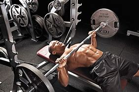

벤치 프레스는 근력 운동을 해본 적 없는 사람들도 알고 있는 가장 대표적인 운동으로서, 가슴 위의 상체를 종합적으로 강화시키는 효과를 준다.
웨이트 트레이닝 3대 운동 중 하나답게 운동 효과가 매우 뛰어나다. 거대한 가슴 근육 발달에는 벤치 프레스만한 운동이 없으며 가슴뿐만 아니라 어깨, 삼두 등 상체 근육 전반을 그 어떤 운동보다도 고중량으로 소화해낼 수 있는 상체 운동의 최고봉인 운동이다.